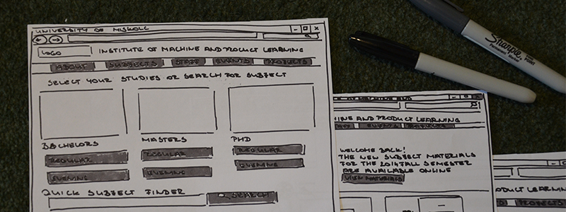

I start off every project ensuring that the product is well defined, the project goals are clear and shared and that the requirements hide no ambiguity. I Joined a very small team at the University of Miskolc, to redesign the website of the Institute of Machine and Product Learning. During the first phase of the redesign I sat down with all necessary stakeholders to brainstorm and define a project kickoff plan that outline the goals of what the new site should achieve.
To understand the context and circumstances in which the product is used, I like to dive into some background research before starting to design. The main users of the Institution’s website are the students who come to the site looking for information and the faculty that uses the site as a means of communication towards the students. I’ve conducted in-depth interviews and used observation and card sorting techniques to understand task flows, user stories, characteristics and the overall feeling towards the product.
Once all the data is transcribed and analysed, user journeys drafted and matrixes evaluated, it’s time to put ideas on paper. I like to brainstorm and arrange ideation sessions when working in a team and see brilliant thoughts build on each other. I also tend to iterate the sketches and wireframes early on whenever possible and work with low fidelity wireframes initially to quickly assess and test ideas with internal and external users.
Depending on the deadline and the stage of development, I build rapid or working prototypes in various tools to test an idea’s feasibility and usability. For the institution’s website I’ve tested out concepts through low fidelity prototypes. These basic paper prototypes offered invaluable insights and highlighted pain points that may have very easily been overlooked.
I love conducting user research and getting feedback from the people who are best equipped to answer the key research questions. For this project I’ve tested the site’s redesign idea through a series of usability and prototype tests with university students from different classes who use the site. In case the user test results indicate a change of approach, I go back to the drawing board and do another iteration.
Once the concept details are confirmed by research and testing, I work on a detailed Product Requirements and Functionality documentation to keep design, development and stakeholders aligned. I then work closely with design and development teams throughout the implementation. After the website gets launched it’ll be time for learning, measuring and tweaking the product if necessary.